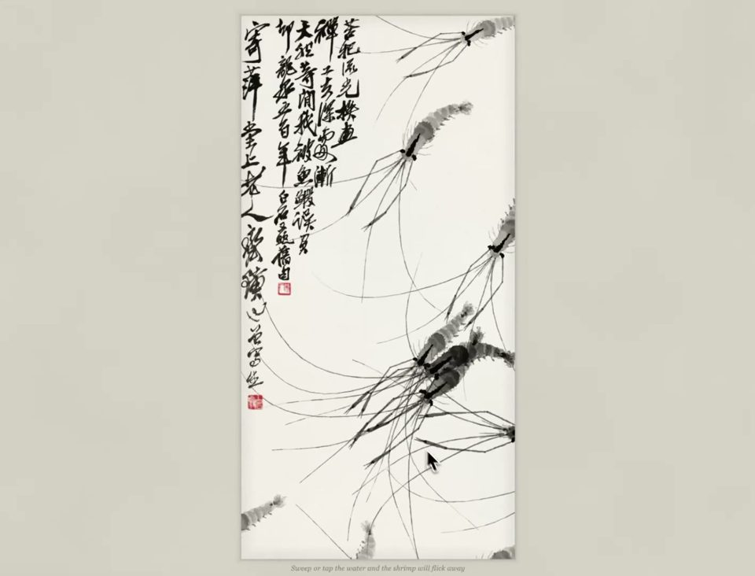
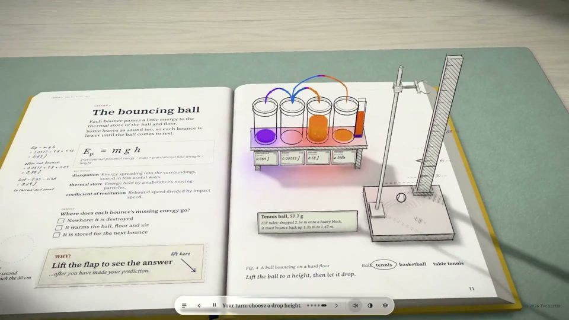
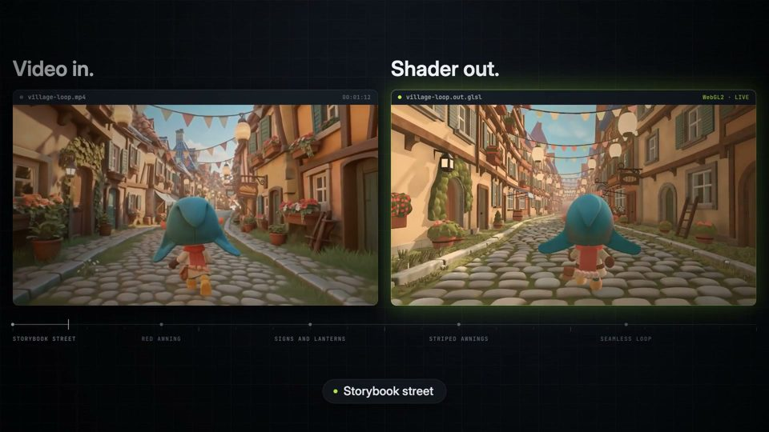
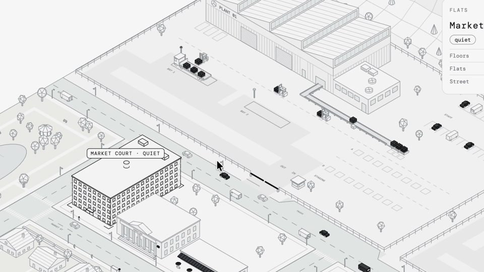

Coding / 情绪 / 全部分区
大语言模型写代码做出的作品（three.js、WebGL、shader…），包括用代码渲染的视频。

Joshua Guo · Opus 5.5 (Claude)
国风水墨 中式 宠物动物

Techartist · Opus 5.5 (Claude)
水彩绘本 产品

gokaygokay · Claude Opus 5.5
3D卡通 欧洲 旅行城市

Khalid · Claude Opus 5.5
游戏CG 旅行城市